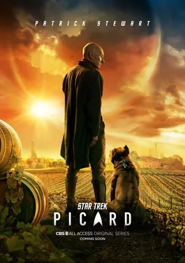

The genetics
In the sources available, the series' biological science is the making of synthetic life. Dr. Bruce Maddox, a researcher at the Daystrom Institute, has built androids with organic bodies, Dahj and Soji, modelled on Data, and Altan Inigo Soong shelters a colony of such beings; both creators are presented sympathetically, and the villains are the Romulan Zhat Vash and their agents in Starfleet, who want to wipe synthetic life out. The second season adds Dr. Adam Soong, a 21st-century scientist and ancestor of the Soong family who has created a synthetic daughter, Kore, and whom Q uses against Picard's mission. The series asks whether synthetic beings, and Picard in his synthetic body, are persons. The sources do not describe the techniques used or any explicitly genetic storyline in the later seasons, so the genetic content of the series as a whole is not fully covered here.
How genetics is portrayed
- Overall portrayal of genetics
- positive The creators of synthetic life are sympathetic and their creations are persons the heroes defend; the villains are the Zhat Vash who want to destroy them, and they do no genetic work.
- Outcome of the genetic intervention
- mixed The synthetic beings are hunted and Dahj is killed, but Soji and the Coppelius colony survive and Picard lives on in a synthetic body.
- Dr. Bruce Maddox
- hero Aim: curiosity (neutral). The Daystrom Institute researcher creates Dahj and Soji, androids with organic bodies modelled on Data; he is a sympathetic creator whose work villains try to destroy, killed by the manipulated Jurati.
- Dr. Altan Inigo Soong
- hero Aim: benevolent, curiosity (positive). Soong shelters and cares for the colony of synthetic beings on Coppelius as their father figure, and they are defended by the heroes.
- Dr. Adam Soong
- ambivalent Aim: personal (neutral). The 2024 scientist creates a synthetic daughter, Kore, and is used by Q against Picard's mission; the sources give little else.
The story
In 2399, retired Admiral Jean-Luc Picard lives on his family vineyard, haunted by Data's death and his failure to save the Romulans. A young woman, Dahj, who turns out to be an android with an organic body and a "daughter" of Data, seeks his help and is killed by Romulan agents. With the synthetic-life expert Dr. Agnes Jurati and a new crew, Picard searches for her twin, Soji, and their creator, Dr. Bruce Maddox, while the secret Romulan sect Zhat Vash hunts synthetic life; Jurati, manipulated by the sect, kills Maddox. Soji leads them to Coppelius, a hidden world of androids under Altan Inigo Soong, and Picard dies defending it before his mind is placed in a synthetic body. In the second season Q sends the crew back to 2024, where they meet Dr. Adam Soong and his synthetic daughter Kore. In the third, Picard learns he has a son, Jack Crusher, and reunites the old Enterprise crew against a Borg invasion.